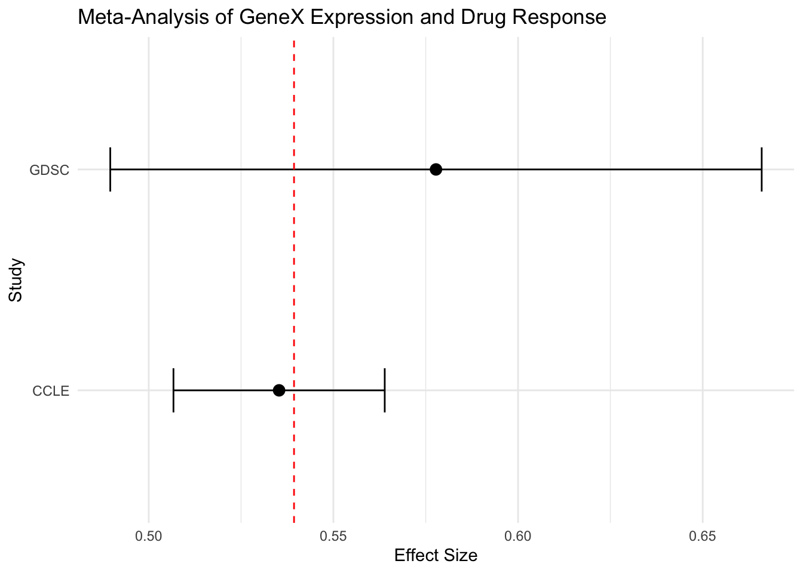

Perform Meta-Analysis
Now we can combine the effect sizes from GDSCsmall and CCLEsmall to perform a
meta-analysis.
Recall from the lecture that we need three variables for our meta-analysis: - Effect Size (also called Treatment Effect or TE) - Standard Error - Dataset Labels (just for plotting purposes)
Let’s extract all of this information from our outputs above and put it into a dataframe.
combined <- data.frame(
Concordance.Index = c(GDSC_ci$c.index, CCLE_ci$c.index),
Standard.Error = c(GDSC_ci$se, CCLE_ci$se),
Upper.CI = c(GDSC_ci$upper, CCLE_ci$upper),
Lower.CI = c(GDSC_ci$lower, CCLE_ci$lower),
Dataset = c("GDSC", "CCLE")
)
combined## Concordance.Index Standard.Error Upper.CI Lower.CI Dataset
## 1 0.5777778 0.04499657 0.6659694 0.4895861 GDSC
## 2 0.5352986 0.01459290 0.5639002 0.5066971 CCLENow we can use the metagen function from the meta package to perform
the meta-analysis.
meta.result <- metagen(data = combined,
TE = Concordance.Index,
seTE = Standard.Error,
studlab = combined$Dataset
)
meta.result## Number of studies: k = 2
##
## 95%-CI z p-value
## Common effect model 0.5393 [0.5121; 0.5665] 38.85 0
## Random effects model 0.5393 [0.5121; 0.5665] 38.85 0
##
## Quantifying heterogeneity:
## tau^2 = 0; tau = 0; I^2 = 0.0%; H = 1.00
##
## Test of heterogeneity:
## Q d.f. p-value
## 0.81 1 0.3692
##
## Details of meta-analysis methods:
## - Inverse variance method
## - Restricted maximum-likelihood estimator for tau^2
## - Calculation of I^2 based on QVisualization with Forest Plots
forest function from meta package
We can use the built in forest function from the meta package to quickly create
a forest plot using the output of the metagen function:
# set your file path
file_path <- "forest_plot.png"
# generate forest plot
png(file = file_path, width = 10, height = 4, res = 600, units = "in")
forest(meta.result)
dev.off()## quartz_off_screen
## 2The forest plot has been saved to your device at your specified file path. We have also attached the plot below:

(#fig:core_set_class)PharmacoSet class structure
Using ggplot2
We can also visualize this data usign the ggplot2 package. While this will not
return a full forest plot, we can get a closer look at the relationship between the
effect sizes of each individual dataset and the meta-estimate.
ggplot(combined, aes(x = Concordance.Index, y = Dataset)) +
geom_point(size = 3) +
geom_errorbarh(aes(xmin = Lower.CI, xmax = Upper.CI), height = 0.2) +
geom_vline(xintercept = meta.result$TE.random, linetype = "dashed", color = "red") +
labs(
title = "Meta-Analysis of GeneX Expression and Drug Response",
x = "Effect Size",
y = "Study"
) +
theme_minimal()
In the plot above, we have each data point representing the individual dataset effect sizes, the error bars represents the confidence interval, and the vertical line representing the meta-analysis treatment estimate.
We can very clearly see that the red line is closer to the CCLE data point compared to the GDSC data point. This is reflective of the CCLE having a greater weight due to a lower variance among other considerations.